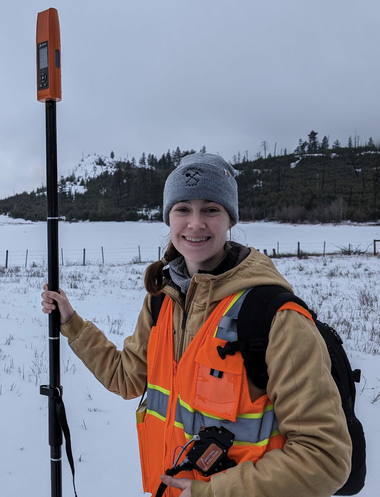

<!DOCTYPE html>
<html lang="en">
<head>
  <meta charset="UTF-8">
  <meta name="viewport" content="width=device-width, initial-scale=1.0">
  <title>Emmy Hughes</title>
  <style>
    img {
      max-width: 100%;
      height: auto;
    }
  </style>
</head>
<body>

<!-- Your content here -->

<!-- Image (adjusted for smaller size) -->


<!-- Your content here -->

</body>
</html>

<!DOCTYPE html>
<!DOCTYPE html>
<html lang="en">
<head>
<meta charset="UTF-8">
<meta name="viewport" content="width=device-width, initial-scale=1.0">
<title>Emmy B Hughes</title>
<style>
/* Style for the navigation bar */
.navbar {
  background-color: #ADD8E6; /* Baby blue background */
  font-family: 'Courier New', Courier, monospace; /* Courier New font */
  overflow: hidden;
}

/* Style for the links within the navigation bar */
.navbar a {
  float: left;
  display: block;
  color: black; /* Black lettering */
  text-align: center;
  padding: 14px 20px;
  text-decoration: none;
}

/* Style for the hover effect on links */
.navbar a:hover {
  background-color: #64BDDA; /* Light blue hover effect */
}

/* Clear floats */
.navbar::after {
  content: "";
  clear: both;
  display: table;
}
</style>
</head>
<body>

<!-- Navigation bar -->
<div class="navbar">
  <a href="research.html">Research</a>
  <a href="about.md">Contact</a>
  <a href="cv.md">CV</a>
  <a href="random.md">Random</a>
</div>

</body>
</html>

<!-- top of the page text -->
<!DOCTYPE html>
<html>
  <head>
    <title>Hello World</title>
    <style>
      body {
        font-family: Courier New, monospace;
        font-size: 18px;
        font-
      }
    </style>
  </head>
  <body>
    <p>My name is Emmy Hughes! I'm a planetary geologist and PhD candidate at the Georgia Institute of Technology. My primary research interests are Mars geology, aqueous geochemistry, and spectroscopy.</p>
  </body>
</html>

<!-- image and text-->
<!DOCTYPE html>
<html>
  <head>
    <title>Emmy Field</title>
    <style>
      body {
        font-family: Courier New, monospace;
      }
      .container {
        display: flex;
        align-items: flex-start;
      }
      .text {
        font-size: 18px; /* Adjust font size as needed */
        margin-left: 10px; /* Adjust the spacing between image and text */
      }
    </style>
  </head>
  <body>
    <div class="container">
      
      <div class="text">
        <p>My research involves data from the Mars Curiosity Rover, of which I am a team member; orbital data from Mars (mainly, high resolution imagery and hyperspectral data); and analogue work in hypersaline systems on earth. My main tools are spectroscopic: I use visible-to-near-infrared spectroscopy, laser induced breakdown spectroscopy, and Raman spectroscopy (among other techniques!) to characterize mineral assemblages. I am mainly interested in salty systems and how mineral assemblages, phases, hydration state and structure can be used to understand the conditions under which they formed. 
        <br> <br>
        I am a member of the <a href="https://wray.eas.gatech.edu/" target="_blank">Wray</a> and <a href="https://planetas.eas.gatech.edu/" target="_blank">Rivera Hernández</a> research groups here at Georgia Tech. 
        <br> <br>
        Please check out more details on my research, my CV, my contact information, and my hobbies!
          </p>
      </div>
    </div>
  </body>
</html>
